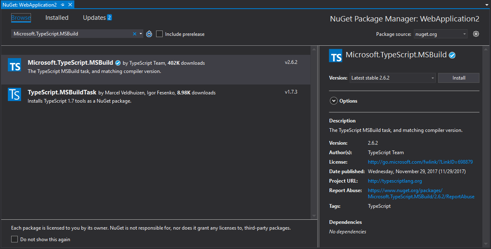
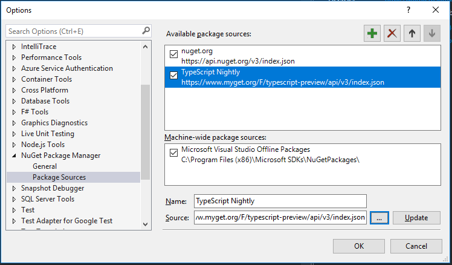

Building via NuGet
As an alternative to using the TypeScript SDK with MSBuild to compile TypeScript, you can also use the TypeScript NuGet package Microsoft.TypeScript.MSBuild. This allows you to install a particular version of TypeScript locally to your project.
Note
One common use case for the NuGet package is for compiling TypeScript using the .NET Core CLI. Unless you are willing to hand-edit your project file to import build targets from a TypeScript SDK installation, the NuGet package is the only way to enable TypeScript compilation using .NET Core CLI commands such as dotnet build and dotnet publish.
Caution
If you are using the NuGet package for MSBuild support for a given project, that project file must not itself import Microsoft.TypeScript.Default.props or Microsoft.TypeScript.targets.
These will be imported by the NuGet package, so including them separately could cause unintended behavior. See Removing Default Imports for details on what to remove.
Installing major releases via NuGet (https://www.nuget.org)
- Right-Click -> Manage NuGet Packages
Search for
Microsoft.TypeScript.MSBuild
Hit
Install- When install is complete, rebuild!
Installing nightly drops (https://www.myget.org)
Add a new Package Source
- Go to
Tools->Options->NuGet Package Manager->Package Sources - Create a new Source:
- Name:
TypeScript Nightly Source:
https://www.myget.org/F/typescript-preview/
- Go to
Use the new Package Source
- On Project node Right-Click ->
Manage NuGet Packages Search for
Microsoft.TypeScript.MSBuild
Hit
Install- When install is complete, rebuild!
- On Project node Right-Click ->
Removing default imports
- Right-Click ->
Unload Project - Right-Click ->
Edit <project file name> Remove references to
Microsoft.TypeScript.Default.propsThe import should look something like:
<Import Project="$(MSBuildExtensionsPath32)\Microsoft\VisualStudio\v$(VisualStudioVersion)\TypeScript\Microsoft.TypeScript.Default.props" Condition="Exists('$(MSBuildExtensionsPath32)\Microsoft\VisualStudio\v$(VisualStudioVersion)\TypeScript\Microsoft.TypeScript.Default.props')" />Microsoft.TypeScript.targetsThe import should look something like:
<Import Project="$(MSBuildExtensionsPath32)\Microsoft\VisualStudio\v$(VisualStudioVersion)\TypeScript\Microsoft.TypeScript.targets" Condition="Exists('$(MSBuildExtensionsPath32)\Microsoft\VisualStudio\v$(VisualStudioVersion)\TypeScript\Microsoft.TypeScript.targets')" />
Package structure details
Microsoft.TypeScript.MSBuild.nupkg contains two main folders:
buildfolderTwo files are located in this folder. Both are entry points - for the main TypeScript target file and props file respectively.
Microsoft.TypeScript.MSBuild.targets
This file sets variables that specify the run-time platform, such as a path to
TypeScript.Tasks.dll, before importingMicrosoft.TypeScript.targetsfrom thetoolsfolder.Microsoft.TypeScript.MSBuild.props
This file imports
Microsoft.TypeScript.Default.propsfrom thetoolsfolder and sets properties indicating that the build has been initiated through NuGet.
toolsfolderVersions prior to 2.3 only contain a tsc folder.
Microsoft.TypeScript.targetsandTypeScript.Tasks.dllare located at the root level.In versions 2.3 and later, the root level contains
Microsoft.TypeScript.targetsandMicrosoft.TypeScript.Default.props. See MSBuild Configuration for more details on these files.Additionally, the folder contains three subfolders:
net45This folder contains
TypeScript.Tasks.dlland other DLLs on which it depends. When building a project on a Windows platform, MSBuild uses the DLLs from this folder.netstandard1.3This folder contains another version of
TypeScript.Tasks.dll, which is used when building projects on a non-Windows machine.tscThis folder contains
tsc.exeand all dependency files required to execute the exe. On Windows,TypeScript.Tasks.dlluses thetsc.exeto build projects. On non-Windows,TypeScript.Tasks.dlluses Node.js to runtsc.js- implying that it is required for Node.js to be installed on these platforms.Note
Since we use Node.js to run the compiler on non-Windows platforms, Node.js must be installed in this scenario.